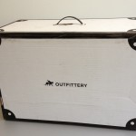

Vor einigen Wochen habe ich mich noch bitterlich über meine Schwierigkeiten beim Kleidungskauf beschwert. Daraufhin hat der gute Klemens prompt gemeint, ich soll mir einfach mal Outfittery.at ((Ein ähnliches Angebot hat übrigens modomoto.de)) ansehen, einen mir bis dato unbekannten Dienst.
Und was für ein Dienst: Exklusiv auf die Bedürfnisse von Männern zugeschnitten erledigt Outfittery fast automatisch die für Männer so unbewältigbare Aufgabe des Kleidungskauf – ohne dass man überhaupt erst selbst den Arsch von der Couch heben müsste. Das verspricht zumindest die Website. „Ho Lee Fuk„, hab ich mir gedacht und mich noch am selben Tag registriert.
Der Ablauf:
- Zuerst musste ich einen ziemlich langen Fragebogen ausfüllen, wo im Detail auf alle möglichen Kleidungstypen eingegangen wurde. Ich hab das meiste neben meinem Kleiderschrank beantwortet, da so obskure Dinge wie „Hemd-Kragenweite“ und „Sakko-Größe“ abgefragt wurden, die ich natürlich als Mann nicht aus dem Stegreif beantworten konnte. Ich hab die Sache sehr ernst genommen, und so zum Beispiel sogar mein tatsächliches Körpergewicht angegeben. Alle Fragen zu beantworten dauerte etwa 30 Minuten.
- Im Zuge dieses Fragebogens wurde mir auch gleich ein „persönlicher Stylingberater“ zugeteilt, vermutlich anhand von Alter und präferiertem Kleidungsstil. Ich bekam einen gewissen Stefan.
- Über die Website wurde dann für einige Tage später ein Telefon-Termin mit Stefan koordiniert. Konkret hab ich mich am Sonntag Abend registriert und den vorgeschlagenen Telefon-Termin für Mittwoch Vormittag übernommen.
- Und tatsächlich, pünktlich zur vereinbarten Zeit läutete das Telefon und Stefan war dran. Wir haben etwa 20 Minuten recht nett geplaudert, meine Präferenzen und Vorstellungen („Brauchst du was für den Herbst, oder eher noch für den Sommer? Business oder Freizeit-Look? Schuhe auch?“) geklärt und uns beschwerend über unsere altersbedingt anwachsenden Bäuche geäußert. Ich hab mich auf Freizeit-Sommer-Outfits eingeschossen, sonst aber kaum Vorgaben gemacht. Stefan versprach, dass meine erste Outfittery-Box in etwa 14 Tagen eintreffen sollte.
- Es hat ca. 10 Tage gedauert, dann stand das schmucke Schächtelchen vor der Tür.
- Wahnsinnig aufgeregt – ich hatte ja keinen Schimmer, was da auf mich zu kam und was Stefan für mich in petto hatte – habe ich dann die Box durchwühlt und schnell festgestellt, dass er mir drei abgestimmte Outfits (Hosen, Hemden, T-Shirts, Westen) sowie ein Paar Schuhe und Socken zusammengestellt hat. Die Outfits waren sogar entsprechend ihrer abgestimmten Zusammengehörigkeit mit einem Seilchen verschnürt.
- Und was ich da so vorfand, gewann schnell mein Gefallen und das der mit-auspackenden Kolleginnen. Stefan hat meinen Stil und meine Größe recht gut erwischt, bei keinem der Stücke lag er komplett daneben.
- Nach einer Moden-Schau vor höchst kritischer Jury hab ich mich entschieden, von den 13 Stücken, die in meiner Box waren, 9 zu behalten und den Rest zurückzuschicken. Bezahlt muss übrigens nur das werden, was man auch behält.
- Vor diesem Beitrag habe ich auch gleich noch die erbetene Feedback-E-Mail an Stefan getippt. Idealerweise ist die nächste Box ja noch besser auf mich abgestimmt.
- Da man schon direkt über die Website angibt, welche Stücke man behalten möchte, kam auch prompt die auf meine Auswahl passende Rechnung. Zahlung per Kreditkarte ist angenehmerweise möglich.
{kind=link}
{kind=link}
Die guten Sachen:
- Es lief alles sehr flott ab: Es vergingen nur 2 Wochen zwischen meiner Erstanmeldung bis ich meine Outfittery-Box in den Händen hielt.
- Das Telefonat mit dem Styling-Berater war sehr nett und kurzweilig.
- Die Box schaut sehr cool aus, und die Stücke waren sorgfältig verschnürt und verpackt.
- Eigentlich das Wichtigste: Mein Geschmack und meine Größe wurden hervorragend getroffen, die für mich ausgewählte Kleidung passte hervorragend und gefällt nicht nur mir sondern auch konfrontierten Kollegen und anderen Menschen, deren Meinung mir wichtig ist. Und das ist kaum der Fall, wenn ich selbst einkaufen gehe.
Die schlechten Sachen:
- Outfittery führt eher hochpreisige Markenartikel. Das wirkte sich natürlich umgehend auf meine Kreditkarte aus, die sonst eher Einkaufstouren in H&M und C&A gewohnt ist. Allerdings hatte ich nicht das Gefühl, dass Outfittery teurer als vergleiche Online-Shops wäre. Übrigens zahlt man für den zusätzlichen Service nichts, es wird ausschließlich die behaltene Kleidung verrechnet.
- Das CRM läuft im Detail noch nicht optimal: So hat Stefan zwar eine nette handgeschriebene Notiz mit meiner Box verschickt, allerdings hat er mich dort wieder gesiezt, obwohl wir uns im Telefonat schon auf das Du geeinigt hatten. Auch auf meine ausführliche Feedback-E-Mail kam nur eine standardisierte Antwort zurück, die mit keinem Wort auf mich oder mein Feedback eingegangen ist. Das mag zwar jetzt angesichts des überwiegend positiven Eindrucks kleinlich erscheinen, wenn aber schon ständig vom „persönlichen Styling-Berater“ gesprochen wird, sollte das auch so gelebt werden: Nichts gegen effiziente Vordrucke und E-Mail-Vorlagen, ein paar persönliche Worte wären aber nicht fehl am Platz.
- Zwischendurch bekam ich mal eine falsche automatisierte E-Mail (Einladung zum Telefonat, obwohl das schon erledigt war). Außerdem ist der am Lieferschein aufgedruckte Feedback-Link auf die Website tot.
Ich möchte aber noch einmal betonen (da mein „Schlecht“-Absatz soviel länger geworden ist als mein „Gut“-Absatz), dass mein Outfittery-Erlebnis überwiegend sehr positiv war und der angebotene Service sogar noch besser funktioniert hat als erwartet. Es hapert zwar noch an Details, ich werde sicher wieder dort und bei Stefan bestellen.
Wenn der geneigte Leser nun neugierig geworden ist und sich Outfittery mal näher ansehen will, wäre ein Klick über meinen Referral-Link nett, weil ich dann bei einer etwaigen Bestellung mit einem 20-€-Gutschein versehen werde. Verbindlichsten.
Nice. Hast du ev. ein, zwei Fotos von den Outfits die du behalten hast? Getragen versteht sich?